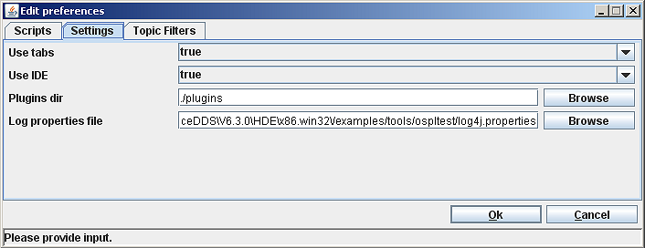
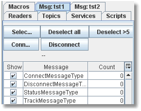
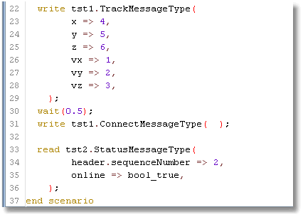
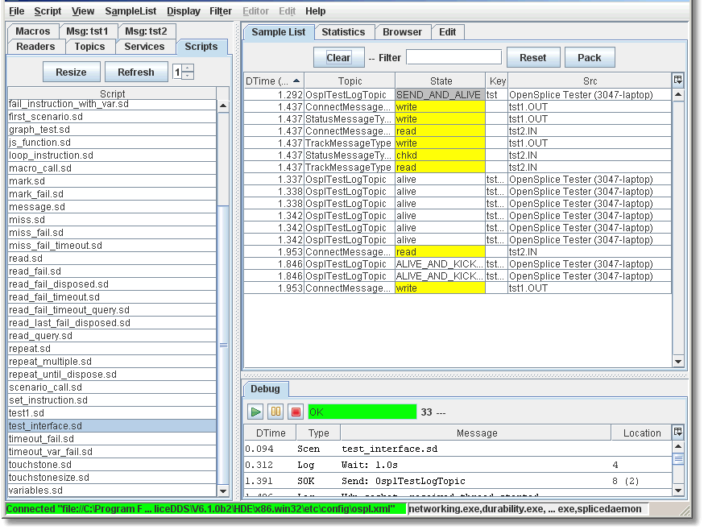

7. Message Interfaces¶
This section describes how to test applications with non-DDS interfaces.
7.1. Message interfaces¶
An important feature of the OpenSplice Tester is the support of additional interfaces. When an application under test only has a DDS interface it is probably easy to test automatically by stimulating it from the Vortex OpenSplice Tester with samples and verifying the samples produced by the application under test. When the application under test has a GUI component, the message instruction can be used to perform a semi-automated test where the Vortex OpenSplice Tester performs manual control of the GUI and/or performs visual inspections of the GUI (as instructed in the message instruction).
When an application under test has a non-DDS interface, then the message interface of Vortex OpenSplice Tester can be used. There are a number of constraints on the use of a message interface:
- The interface must consist of a limited number of message types which can be described by a static set of fields with static types.
- It must be possible upon reception of a message over the interface, to determine a message type, and from the message type to interpret the message and determine the value for each field of the message.
If these requirements are met, a message interface can be developed for a specific interface of an application under test. This will allow automated testing where messages are written to the test interface, the message received from the test interface will be added to the sample list and it can be checked in the same manner as DDS samples.
7.2. Getting Started with a Message Interface¶
The best way to get started with a message interface is to compile and use the TestInterface. The TestInterface is an example message interface which uses a TCP/IP connection and sends a memory-mapped message with a static structure over this interface. The source for the TestInterface is provided and it can be found here:
<OSPL_HOME>/examples/tools/ospltest/TestInterface
To compile the TestInterface, ant and a JDK1.6 must be installed. To build the TestInterface, execute ant in the TestInterface directory. This will compile the testinterface and install the resulting plugin in:
<OSPL_HOME>/examples/tools/ospltest/plugins
To run with the plugin, make sure the plugin path points to this directory. The plugin path can be set in Preferences:
Setting the plugins path in Preferences
{kind=link}
If the plugins directory is changed, the Tester needs to be restarted. Once restarted, make sure that OpenSplice is running (the TestInterface registers a topic which will fail is DDS is not running upon startup).
Now two instances of the testinterface should show up in the left tab pane (or in separate windows if Use Tabs is false). Similar to the Readers pane, the table will show the available messages and the number of received messages per message type. Since there is no application under test, the testinterface is instantiated twice and connected back-to-back. As a result, a message written to the instance “tst1” will be received on the instance “tst2” and vice versa. Also the testinterface has created a topic, OsplTestLogTopic, and the test interface will write a sample of this topic for each write and read with the content of the message in hexadecimal format.
Messages received on instance tst1
{kind=link}
Now select the test_interface.sd script, which can be found in examples/tools/ospltest/scripts:
The script test_interface.sd
{kind=link}
In the script we can see that, similar to the send and check instruction, the write and read instructions are used to write a message to the test interface, or read (check) a message received on the test interface.
Execute the script:
Script test_interface.sd running
{kind=link}
Here we can see that in the sample list, both the DDS samples as well as the testinterface samples are available. As a result the interaction is clearly visible.
7.3. Types of interfaces¶
When integrating a test interface with the Vortex OpenSplice Tester, the following functionality is provided:
- Connect/Disconnect with a parameter
- Write of messages based on parameters of a write call
- Read of messages and display received messages in the sample list
- Check received messages
- Display fields of messages (double click in sample list)
- Hooks upon write/read of a message
The Vortex OpenSplice Tester provides two ways to create such a message interface:
- Basic message interface
- Buffered message interface
7.3.1. Basic message interface¶
If it is not possible to describe the content of each message in an ADA interface description (i.e. a static memory-mapped definition of each message type) or when the definition of the interface exists in another format, like a MIB for an SNMP interface, then it is possible to derive from the basic message interface class:
BaseMsgInterface
Similarly for the messages a class must be derived from:
MsgSample
Note that both BaseMsgInterface and MsgSample contain a considerable number of abstract function which then must be provided in order to be able to edit and display samples, as well as read and write sample on their interface.
7.3.2. Buffered message interface¶
The example test interface is a buffered message interface. The Vortex OpenSplice Tester provides support for memory-mapped messages and provides all basic functionality for this type of interface. The messages are described using the ADA language type definition for records with a representation clause. This allows to describe message with bit fields, enums, fixed length strings, integer and double values.
On top of the buffered message interface, an implementation using UDP and TCP is available.
When the buffered message interface is used the provided implementation takes care of interpreting the received messages, decode the messages for display in the sample list or display in the sample window. Upon a write instruction a memory buffer will be built using the parameters of the write call and the message definition as provided in the ADA interface description.
7.3.2.1. ADA Syntax for message definition¶
For each message a record needs to be defined which describes the exact memory layout of the message. See the ADA message description of the test interface for an example of such a message definition.
7.3.2.2. Message ID translation¶
By default in a buffered message interface a base record is defined with an idfield to determine the type of the message. Then a function is called to translate the value of the idfield to a name of the record type with the definition of a message of the received type.
If a message does not contain a single field which can be used to determine the message type then the method:
RecordType determineMsgType(ByteBuffer buf)
can be overwritten to perform the translation of the received buffer to a message type.
If indeed the id can be retrieved from an id field (enum value) then the function:
protected static String transformIdToType(String id)
is used to translate the enum label to the name of a record definition. The following translation is done:
- ID is changed to TYPE
- Each character following an underscore (‘_’) is capitalized, as well as the first character and the remaining characters are made lowercase.
As a result an enum label: HEARTBEAT_MESSAGE_ID is translated to HeartbeatMessageType.
Of course if a different convention is used for describing enum labels and message names, then the transformIdToString function can be overridden to perform the required translation.
7.3.2.3. Message Hooks¶
It is possible to override message hooks at several stages in the send and receive process. This allows specific processing, such as:
- Automatic reply to each received message (acknowledge messages)
- Fill in automatic fields like sequence numbers, crcs, or timestamps
- Ignore messages for reception, like acknowledge messages or heartbeats
- Perform specific checks such as crc check
See the example test interface for an example of the hooks and a description of their function.
7.3.2.4. Control functions¶
The script control function allows implementation specific control functions to be implemented. In the implementation of the derived interface, the following functions can be overridden (note that the base implementation already provides some control commands, overriding these functions must properly include or forward to the base implementation):
public String[] getControlCommands()
Provide the list of control commands, note that super.getControlCommands should be used to include the list of control commands of the base impementation.
public void control(String command, ParameterList params, ScenarioRuntime runtime, int line, int column)
Execute the control command, with the provided parameters and runtime. In case of an error the line and column can be used as the location of the instruction which failed.
Control functions can be used for any specific function as deemed necessary (of course, all must be implemented in the derived interface class):
- Stop sending heartbeats
- Create incorrect crc
- Stop sending acknowledge
- Determine message frequency